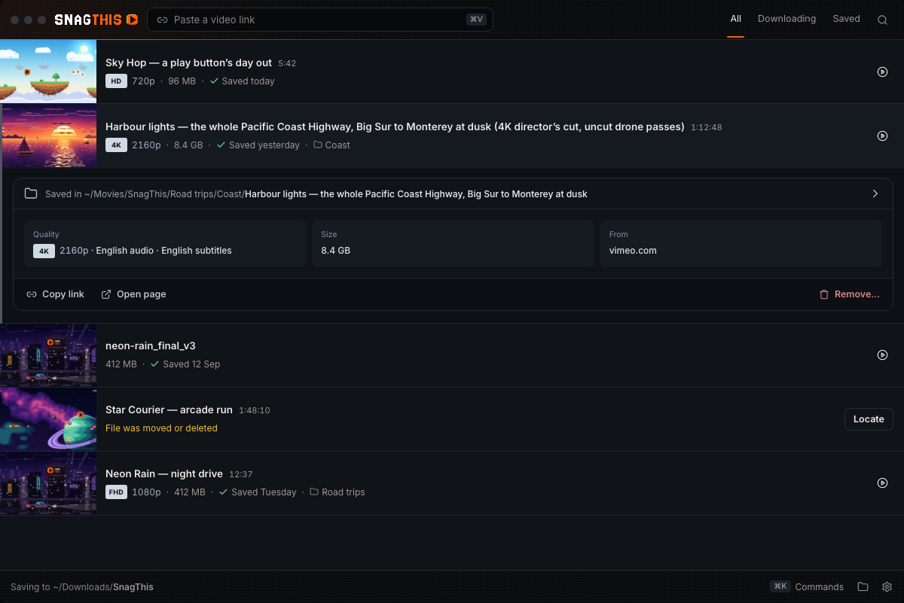
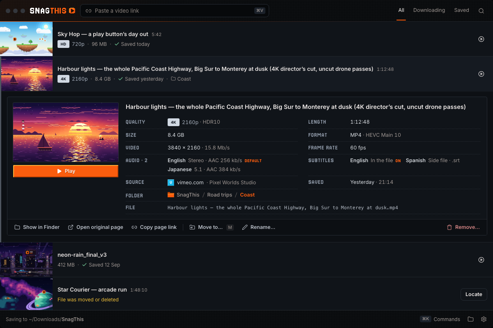
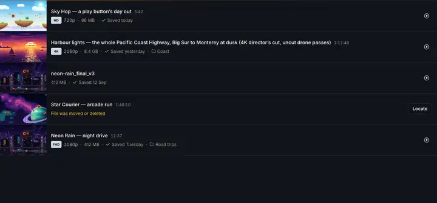
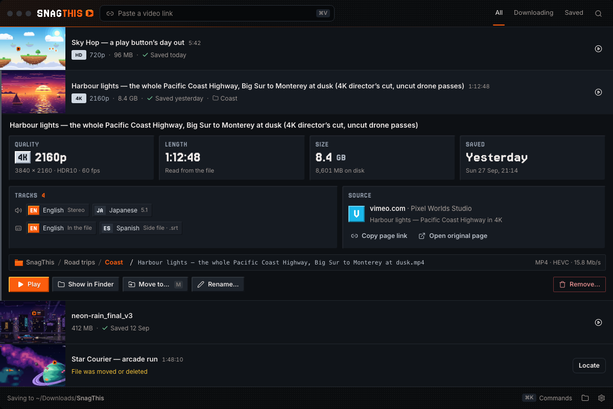
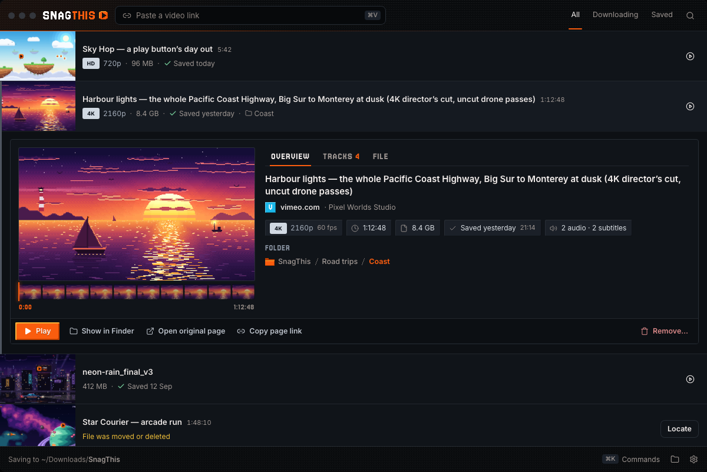
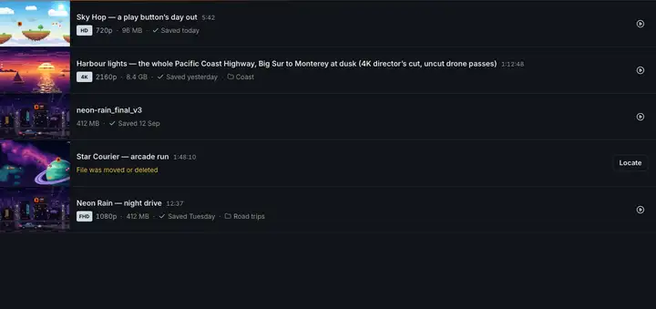
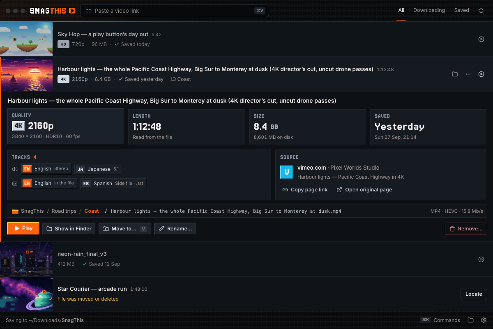
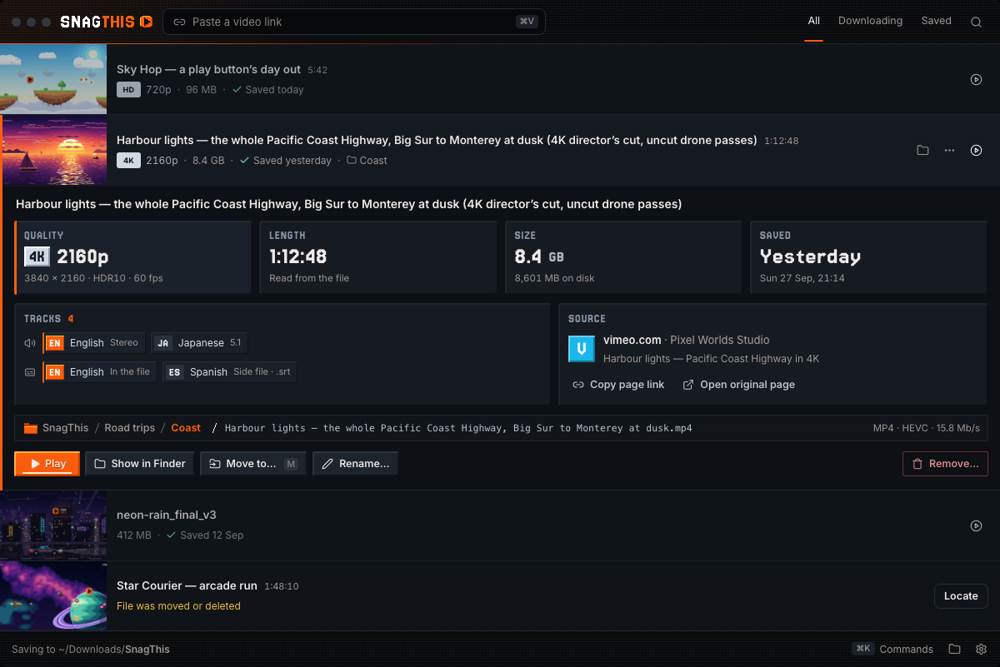
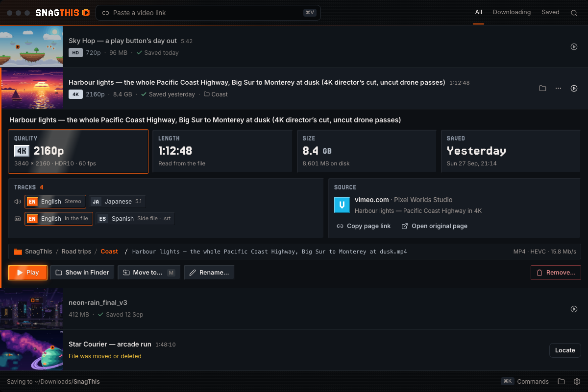

Show more when a saved video is opened
Today an expanded saved row shows only Saved in {path}, often a single Size tile, and Remove…. These studies show a richer panel three ways. Each direction is a clickable page in the real window, with the same seven states: a rich item (4K, 2 audio tracks, 2 subtitle tracks, a long title, a source site, in a folder), a minimal item (pasted file link, length and quality unknown), a missing file (File was moved or deleted · Locate…), hover, keyboard focus, the Remove… popover (Remove from list / Move file to Trash) and the 820px window. Every page also has a Hover switcher (three styles), Motion controls (Replay open / close, Slow ×4, Reduced motion), a Data switcher (Today shows only facts SnagThis already has; Mark new tags facts that need new plumbing) and an OS switch (Show in Finder / Explorer).
Owner choice (2026-09-29): A · Spec sheet with H3 · Pixel shine, now in the app (ui-design-spec §7.1): the probe facts come from GET /api/history/:id/media-info, Rename… renames the video on disk, and finished downloads keep their source page, site, channel and finish time. B and C are prototypes only.
0 · Current baseline

- Saved rows come from the history index, which carries no length, no actual resolution and no track list; quality and audio appear only when the person picked them in the popup's quality menu.
- A pasted direct link keeps no source page, so Copy link and Open page vanish (the owner's screenshot).
- Rename exists only for waiting/paused downloads; Move to… is only in ⋯ and the M key.
Three directions
Numbered and independently selectable: the panel layout (A/B/C), the hover style (H1–H3) and the data plumbing can be chosen separately. Each preview is the rich item open at 1200 × 800. The animation under each is the real open → hold → close choreography, stepped from the page's own CSS.
Spec sheet · chosen
OpenEverything in one readable grid. Poster with its hover loop and a bevel Play on the left; the full title and a two-column list of pixel-labelled facts (Quality, Length, Size, Format, Video, Frame rate, Audio, Subtitles, Source, Saved, Folder, File) on the right; one quiet action bar.


Motion: height eases (260ms); poster pops from .94; the title and each fact drop 5px on a 22ms stagger; close fades the card up, then folds (200ms).


- For: most information per pixel; unknown facts just drop out; cheapest to build.
- Against: the least playful; it reads like a file-properties dialog.
Cards
OpenThe numbers you scan, big and pixel. Four bevel stat tiles (Quality, Length, Size, Saved) in the pixel font; a Tracks card of audio/subtitle chips with pixel language codes (your picks lit in the accent); a Source card with a lettered pixel site chip, channel, Copy page link and Open original page; the file line; and a row of bevel buttons.



- For: most on-brand (same bevel as the logo button and folder chips); tracks are obvious at a glance.
- Against: tallest panel; with few facts the tiles feel sparse; no preview in the panel (the row thumbnail is right above).
Media inspector
OpenSee inside the video. A 400px preview that loops on hover with ten scrub frames beneath (hover one to peek at that moment); tabs Overview · Tracks · File, where File uses the path-bar crumbs (D · Minimal) with codec, resolution, frame rate and bitrate tiles; one action bar.


Motion: the card slides out from under the row (today's Drawer); the preview wipes in left-to-right in 10 pixel steps; scrub frames flick on in order; the tab underline draws.


- For: the richest; the scrub strip answers "which one was this?" without opening a player.
- Against: tabs hide facts behind a click; needs the most new plumbing (probe + scrub frames).
Hover styles (pick one, works with any direction)
The Hover switcher on every page applies one style to the panel's buttons, tiles and chips and its preview. Rows keep today's Soft focus (3px edge grows, other rows dim to 72%) and every thumbnail still starts its silent loop on hover/focus. Stills below are option B with the style forced on Play, the Quality tile, the first chips and the preview.



Motion compared
| Open | Close | Reduced motion | Cost to build | |
|---|---|---|---|---|
| Today | Drawer: rows 0fr → 1fr 340ms, card slides from −38px | Same, reversed | Instant | — |
| A · Spec sheet | Height 260ms ease-out; poster pops (280ms); title + facts fade/drop 5px, 22ms stagger; bar last. ~520ms total | Card fades up 4px (130ms), height folds 200ms after 70ms | Instant height, 120ms fade | Low: keyframes + a --i index per fact row |
| B · Cards | Height 220ms; tiles press in (300ms each, 40ms apart); chips pop (25ms apart); file line + buttons fade. ~650ms total | Tiles sink 4px (140ms, 15ms apart), then fold 180ms | Instant height, 120ms fade | Medium: bevel keyframe, --i/--c indices, must end before hover lift applies |
| C · Inspector | Drawer slide (340ms) + height 300ms; preview wipes in 10 steps (280ms); frames flick on 22ms apart; tab underline draws. ~620ms total | Card lifts 26px and fades (220ms) while height folds (240ms) | Instant height, 120ms fade; no wipe | Low–medium: one clip-path keyframe; tab switches add a 180ms pane slide |
All three keep the existing single-open rule (opening another row closes this one with its close motion) and the grey/orange one-edge-per-item rule. Motion never delays input: the panel is interactive from the first frame.
What data exists vs. what needs new plumbing
Saved rows are built from history items (packages/downloader-api/src/services/historyIndex.js → toRowModel in packages/contracts/src/rows.js). The engine runs ffprobe after downloads only to validate segments and to find the duration for the preview clip (PreviewClip.js inspectLocalVideo: format=duration and whether a video stream exists); nothing is stored. Have = in the history item today · Probe = one bounded ffprobe on expand · New = other new plumbing.
| Fact | Status | Where it comes from / what to add |
|---|---|---|
| Title, file name, full path, folder | Have | title, fileName, absolutePath, folder |
| Size | Have | sizeBytes (stat) |
| Saved date | Have (approx.) | modifiedAt is the file's mtime and changes if the file is touched; the job's completedAt is better and cheap to copy into the history item |
| Poster + hover loop | Have | thumbnailUrl, previewClipUrl (generated on demand for completed files) |
| Container | Have | ext |
| Source page / site | Have when captured | sourcePageUrl (from the popup). New (small): pasted links keep only job.url, which isn't copied to the history item — copy it as mediaUrl so “Copy video link” and a host can show |
| Chosen quality / audio / subtitles | Have when picked | selection.height / audioLang / audioTrack / subtitleLang; subtitleMissing is on the job but not the history item |
| Channel, upload date, description | YouTube / TMDB only | youtubeMetadata, tmdbMetadata; other sites would need page metadata captured at download (New) |
| Length | Probe | Only YouTube/TMDB today. format.duration (PreviewClip already reads it and discards it) |
| Actual resolution, HDR | Probe | streams[v].width/height, color_transfer (smpte2084/arib-std-b67 → HDR) |
| Video codec, profile, frame rate, bitrate | Probe | codec_name, profile, avg_frame_rate, format.bit_rate |
| Every audio track (language, channels, codec, default) | Probe | streams[a].tags.language, channel_layout, disposition.default; labels via languageName/channelsLabel in contracts |
| Subtitles in the file and beside it | Probe + dir scan | Embedded mov_text streams from ffprobe; side files ({name}.srt/.vtt, {id}-subtitles.srt) by listing the video's folder (the move code already finds them) |
| Scrub frames (C) | New | ffmpeg: 10 stills at 192×108 (≈50 KB total) or one sprite, generated on first expand and cached beside the preview clip |
| Rename a saved video | New | An API that renames the file with its side files (reuse the move logic in libraryFolders.js), plus F2 on saved rows |
| Missing file: last folder | Have | Persisted path; Locate is POST /api/history/:fileName/locate |
Proposed probe API: GET /api/history/:id/media-info runs ffprobe -v error -show_format -show_streams -of json (8s timeout, like PreviewClip) on the saved file, maps it to plain words in packages/contracts, and caches the result in the history index keyed by path + size + mtime, so each file is probed once (tens of ms for a local MP4). The panel renders from today's data immediately and fills the probe facts in without moving the layout (fixed rows/tiles, no shimmer for <150ms). Probing at download completion instead would cover new files for free but not the existing library.
Questions for the owner
- Which layout: A Spec sheet, B Cards or C Media inspector (or A's grid with B's bevel Play/tiles)?
- Which hover style: H1 Bevel lift, H2 Sweep or H3 Pixel shine?
- Should the panel repeat the full title only when the row truncates it, or always?
- OK to add ffprobe on expand (and scrub frames, if C)? Should Rename… for saved videos ship with this?